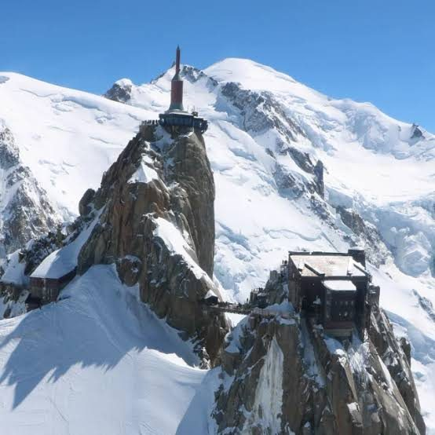
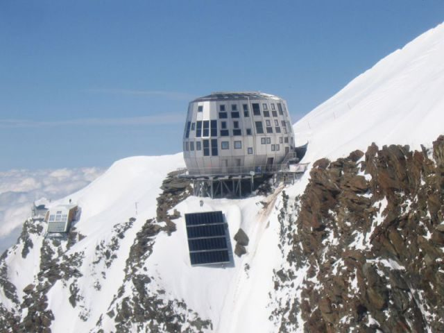
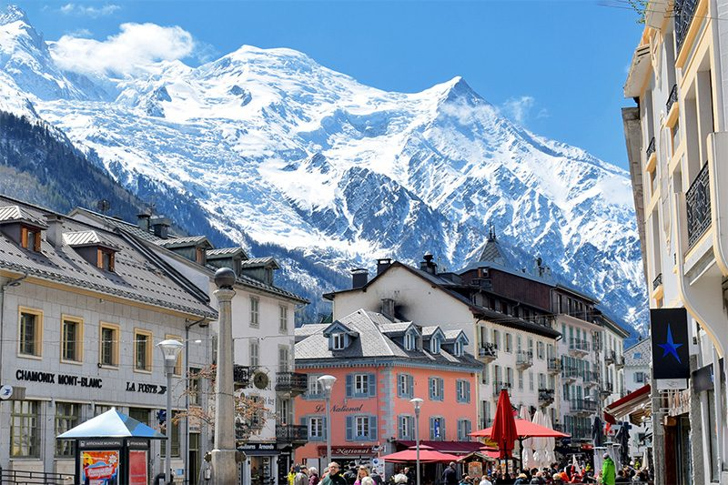
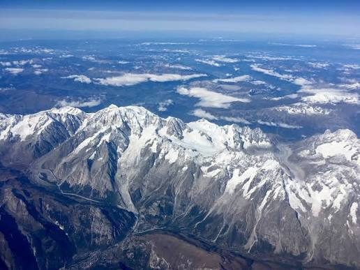

The highest peak in Western Europe has been calling my name for a decade. In 2027, I plan to answer.西欧最高峰已经呼唤我十年了。2027年，我计划回应它的召唤。
Some dreams are born in a single, quiet moment — a flash of a view through a car window that embeds itself so deeply in your memory that it refuses to fade. For me, that moment came about ten years ago, on a self-drive holiday through the Alps. Joanne and I were behind the wheel, winding through mountain roads, when Mont Blanc appeared.有些梦想诞生于某一个静谧的瞬间——透过车窗的一瞥，深深烙印在记忆里，再也无法消退。对我而言，那一刻发生在大约十年前，那是一次穿越阿尔卑斯山的自驾假期。Joanne 和我坐在车里，蜿蜒穿行于山间公路，Mont Blanc 就在那时出现了。

There it was — towering above everything else, wrapped in a permanent crown of snow and ice, so enormous that it seemed less like a mountain and more like a declaration. The French Alps stretched endlessly on either side, but nothing else came close. I remember slowing the car almost involuntarily, just to look longer.它就在那里——高耸于一切之上，裹着一顶永恒的冰雪冠冕，如此巨大，与其说是一座山，不如说是一个宣言。法国阿尔卑斯山脉在两侧无尽延伸，但没有任何东西能与它媲美。我记得我几乎是不由自主地放慢了车速，只为多看一眼。
That view stayed with me. Quietly. For ten years.那幅景象悄悄地留在我心里。整整十年。
Recently, I came across a hiking video of Mont Blanc on YouTube. I pressed play expecting just another travel film — beautiful drone shots, cheerful music, nothing that would really touch me. I was wrong. Watching climbers make their way up those glaciated ridges, seeing the world fall away beneath their feet, and then arriving at that summit — I felt something rise up in my chest that I recognised immediately.最近，我在 YouTube 上偶然看到一段 Mont Blanc 的徒步视频。我按下播放键，以为不过又是一部旅游片——美丽的航拍镜头、欢快的音乐，没什么能真正触动我的。我错了。看着攀登者一步步攀上那些冰川山脊，看着大地从他们脚下渐渐远去，然后抵达那个峰顶——我感到胸口有什么东西升腾起来，我立刻认出了那种感觉。
It was the same feeling from that car window, ten years ago. Unfinished business.那是十年前透过车窗时的同一种感觉。未竟的心愿。
This video covers the route, the gear, the altitude, the refuges, and what to expect on summit day. Essential watching if you are serious about Mont Blanc.这段视频涵盖了路线、装备、海拔、山屋，以及登顶日的真实情况。如果你认真考虑攀登 Mont Blanc，这是必看的内容。
▶ Watch on YouTube在 YouTube 观看For those who haven't encountered it yet — Mont Blanc sits on the border of France and Italy, and at 4,807 metres (15,774 feet), it is the highest mountain in the Alps and the highest peak in all of Western Europe. The name means "White Mountain" in French, and from every angle, you understand exactly why.对于还不了解它的人——Mont Blanc 位于法国与意大利边境，海拔 4,807 米（15,774 英尺），是阿尔卑斯山脉的最高峰，也是整个西欧的最高点。这个名字在法语中意为"白色山峰"，从任何角度望去，你都会立刻明白为什么。


The classic route is called the Goûter Route. It takes 2–3 days, requires good fitness and a certified mountain guide, and involves sleeping at a mountain refuge at 3,835 metres before the final push to the summit in the early hours of the morning. It is not technically the most difficult climb in the Alps — but it is objectively serious. The altitude, the glaciers, the unpredictable weather — none of it can be underestimated.经典路线称为 Goûter Route。全程需2至3天，要求良好的体能和认证山地向导，途中需在海拔3,835米的山屋过夜，然后在清晨冲击顶峰。从技术难度上说，它并非阿尔卑斯山最难的攀登——但客观而言绝对严峻。高海拔、冰川、难以预测的天气——任何一样都不可小觑。
This is not a mountain you conquer. This is a mountain you earn the right to stand on, if the weather and your body and your preparation all agree on the same day.这座山不是你去征服的。这座山是你凭借天气、体力与充分准备三者合一，才能赢得站上它的资格的。
— Paul Yeo, 2025
When Joanne and I drove past Mont Blanc all those years ago, we were on one of our self-drive holidays — the kind we love best, no tour group, no fixed schedule, just the two of us and the open road. We had driven through Switzerland into France, and the Alps were all around us. I was not thinking about climbing at that point. I was simply in awe.多年前当 Joanne 和我驱车路过 Mont Blanc 时，我们正在享受一次自驾假期——那是我们最喜欢的方式，没有旅行团，没有固定行程，只有我们两人和一望无际的公路。我们从瑞士开车进入法国，阿尔卑斯山脉环绕四周。那时我根本没有想过攀登。我只是深深地震撼了。
But something planted itself in my mind that day. A quiet voice that said: one day, you should go back. And go higher.但那一天，有什么东西悄悄扎根在我心里。一个轻声说道：有一天，你应该回来。然后爬得更高。

🌿 I have always believed in living before your body says no. I paraglided in Indonesia at 50. I have self-driven through Xinjiang, Switzerland, Portugal, and dozens of other corners of the world. Mont Blanc is the next chapter.我一直相信，要在身体说不之前好好活着。我50岁时在印度尼西亚玩了滑翔伞。我自驾穿越了新疆、瑞士、葡萄牙以及世界各地数十个角落。Mont Blanc 是下一个篇章。
Watching that YouTube video this year brought everything back in vivid colour. I sat there, 70 years old, watching people my junior labour up a glacier in crampons, and instead of thinking "that's not for me," I thought: I want that to be me. In 2027. At 72.今年看那段 YouTube 视频时，一切都以鲜活的色彩重新涌现。我坐在那里，70岁，看着比我年轻的人穿着冰爪艰难攀爬冰川，我没有想着"那不适合我"，而是想：我希望那就是我。2027年。72岁。
This is not just wishful thinking. I am treating this as a real goal, which means it needs a real plan. Here is how I intend to make Mont Blanc happen in the summer of 2027:这不只是一厢情愿的幻想。我把它当作一个真实的目标来对待，这意味着它需要一个真实的计划。以下是我打算如何在2027年夏天实现 Mont Blanc 之旅的方式：
I am not climbing Mont Blanc to prove anything to anyone. I am doing it because that car window, ten years ago, opened a door in my imagination — and I have never fully closed it. There is something about a dream that has been with you for a decade that deserves to be honoured.我攀登 Mont Blanc 不是为了向任何人证明什么。我这样做，是因为十年前那扇车窗，在我的想象里打开了一扇门——而我从未完全将它关上。一个陪伴了你十年的梦想，是值得被认真对待的。
At 72, some people might raise an eyebrow. But I think about Mr. Yusuf Hashim, who chose life over routine at 53. I think about the paragliding flights I took in Indonesia at 50, soaring above valleys that most people only see from the ground. I think about Joanne sitting beside me in that car, watching the same white mountain pass our window.72岁，有些人或许会皱起眉头。但我想到了 Mr. Yusuf Hashim，他在53岁时选择了生活而非例行公事。我想到了我50岁时在印度尼西亚的滑翔伞飞行，翱翔于大多数人只能仰望的山谷之上。我想到 Joanne 坐在那辆车里，看着同一座白色的山从车窗边掠过。
We are not done yet. Not by a long way.我们还没结束。远远没有。
The mountain has been patient with me for ten years. I plan to return the favour — with respect, with preparation, and with every bit of energy this 72-year-old body can summon.这座山等了我十年。我打算以同样的方式回报它——带着敬畏，带着充分的准备，以及这具72岁身体所能召唤的每一分力量。
Mont Blanc — I am coming. 2027.Mont Blanc — 我来了。2027年。 🏔️
This video is packed with practical information on the Goûter Route — gear, timing, altitude, and what summit day really looks like.这段视频包含大量关于 Goûter Route 的实用信息——装备、时间安排、海拔，以及登顶日的真实面貌。
▶ Watch on YouTube在 YouTube 观看